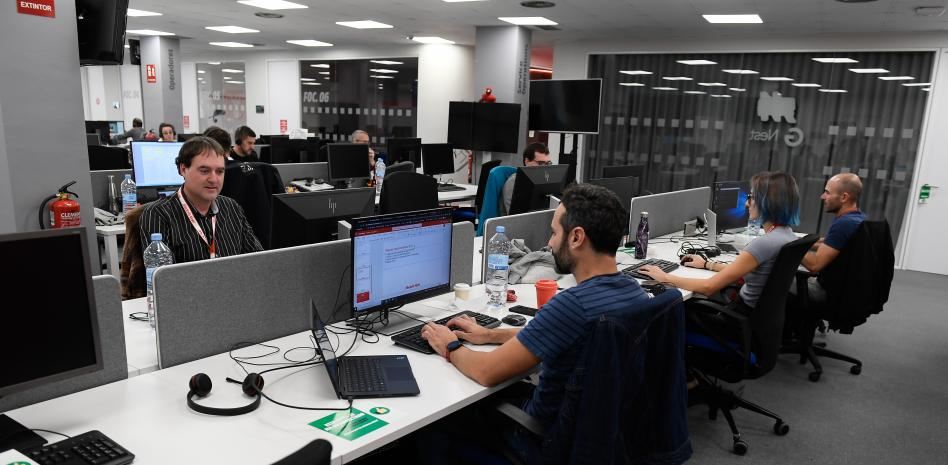

Noticias
Barcelona consigue atraer un centenar de 'hubs' tecnológicos

La consolidación del ecosistema digital de Barcelona no solo se explica por el millar de startups establecidas en la ciudad. La presencia de centros tecnológicos de multinacionales extranjeras también reafirma el prestigio de la ciudad como el mayor hub de innovación del sur de Europa.
Ayer, se supo por primera vez que son un total de 96 compañías extranjeras las que han elegido instalar un centro digital en Catalunya, el 99% en el área metropolitana de Barcelona, ciudad que concentra el 78% del total. Entre los hubs destacados están los de Microsoft, Google, Intel, Pepsico o Sanofi.
Los datos proceden de un estudio elaborado por la fundación Mobile World Capital en colaboración con el Ayuntamiento de Barcelona y la Generalitat.
El Madrid vuelve a meter miedo

Anfield confirmó el gran momento del Real Madrid, que vuelve a meter miedo. Tras la goleada en la Champions ante el Liverpool, el conjunto blanco acumula cinco victorias consecutivas, la segunda mejor racha de la temporada tras los nueve triunfos seguidos con los que arrancó el curso.
Después de unas semanas con resultados irregulares tras el parón del Mundial, el Madrid ha vuelto a coger velocidad de crucero tanto a nivel de marcador como de juego: pleno de victorias en los cinco últimos partidos en los que los hombres de Ancelotti han marcado 20 goles, una media de cuatro tantos por encuentro.
Unos números que asustan a los rivales y que dan confianza a los jugadores del Madrid de cara a lo que viene (derbi liguero y Clásico de Copa). Cinco victorias que le han dado un título (el Mundial de clubes), le han estabilizado en Liga (donde no tiene margen de error) y le han puesto con pie y medio en los cuartos de Champions.
Carolina sigue sumando: subcampeona en Indonesia
Es un proceso largo, que se podría encarar de muchas formas. Carolina Marín, una hoja perenne en lo más alto, decidió hacerlo midiéndose con aquellas jugadoras que aspiran a recoger su testigo. A varios prodigios que, desde su adolescencia, llevan opositando a estrellas. Entre ellas, An Se-Young, verdugo de Carolina en la final del
Masters de Indonesia (18-21, 21-18 y 21-13), la tercera para la onubense tras destrozarse la rodilla (rotura del ligamento cruzado y de los meniscos interno y externo). La lesión mantuvo a la española más de un año fuera de las pistas y le negó los Juegos de Tokio, pero no quebrantó su indomable carácter. Puede y aún sabe que puede.
La surcoreana, número dos del mundo con 20 años, pese a la victoria, es conocedora de ello. Se marcha de Indonesia con su segundo título en 2023, pero con la certeza de que la campeona, hoy en el segundo escalón del podio, ha vuelto.